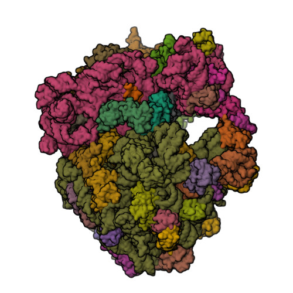
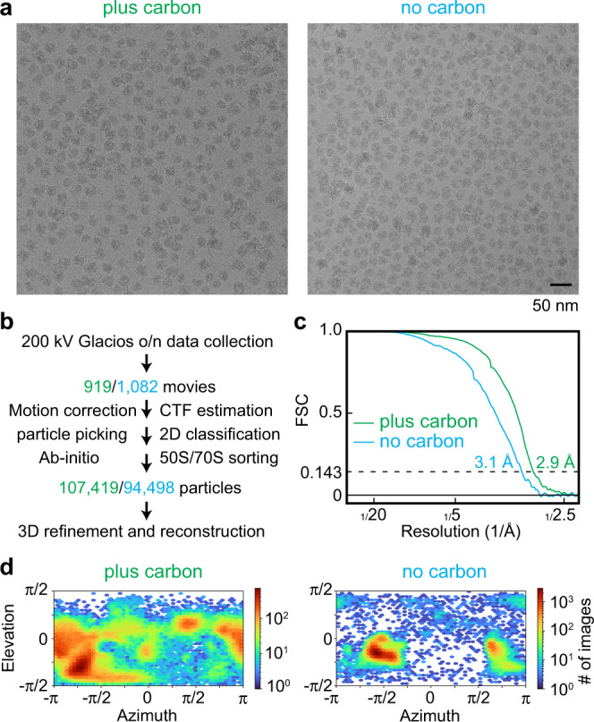

ribosome
The ribonucleoprotein particle that translates mRNA into protein. The bacterial and archaeal 70S ribosome comprises a small (30S) subunit built on 16S rRNA, which decodes the mRNA, and a large (50S) subunit built on 23S and 5S rRNA, whose 23S rRNA catalyses peptide bond formation. This record details that 70S form and the functional core shared with the larger eukaryotic cytosolic 80S ribosome; it does not enumerate 80S-specific components. [GO:0005840]

NCBITaxon:45610) · Helena-Bueno, K., Rybak, M.Y., Gagnon, M.G., Hill, C.H., Melnikov, S.V.; CC0, via Wikimedia Commons · CC0 · source: WIKIMEDIA_COMMONS File:P. urativorans 70S ribosome with Balon and RaiA.jpg (M149208035) · DOI:10.1038/s41586-024-07041-8Synonyms: 70S ribosome
Has part: GO:0015935 GO:0015934
Components
| Component | Type | Part of / acts on | Grounding | Genes | Stoichiometry | Essential | Role |
|---|---|---|---|---|---|---|---|
| 16S rRNA (small-subunit rRNA) | RNA | part of | SO:0000650 | rrs | 1 | ESSENTIAL | Structural core of the 30S subunit; carries the decoding centre that monitors codon–anticodon pairing.
|
| 23S rRNA (large-subunit rRNA) | RNA | part of | SO:0000651 | rrl | 1 | ESSENTIAL | Structural core of the 50S subunit; forms the peptidyl transferase centre.
|
| 5S rRNA | RNA | part of | SO:0000652 | rrf | 1 | ESSENTIAL | Small RNA of the 50S central protuberance.
|
| small-subunit ribosomal proteins (21 proteins in Escherichia coli) | PROTEIN | part of | REVIEWED_LABEL_ONLY | ~21 in Escherichia coli | CONDITIONAL | Stabilise 16S rRNA folding and form the functional 30S subunit.
| |
| large-subunit ribosomal proteins (33 proteins in Escherichia coli) | PROTEIN | part of | REVIEWED_LABEL_ONLY | ~33 in Escherichia coli | CONDITIONAL | Stabilise 23S/5S rRNA; bL12 stalk recruits translation GTPases.
|
Source composition assertions
30S small ribosomal subunit (ComplexPortal:CPX-3802)
Escherichia coli (strain K12) (NCBITaxon:83333) · Hetero22-mer · ECO:0005547 · retrieved 2026-08-30
| Participant | Source type | Gene | Stoichiometry |
|---|---|---|---|
UniProtKB:P0AG63 — Small ribosomal subunit protein uS17 | protein | rpsQ | 1 |
RNAcentral:URS00005CADE5_83333 — Ribosomal RNA 16S Escherichia coli | ribosomal rna | 16s_rrna_ecoli | 1 |
UniProtKB:P02358 — Small ribosomal subunit protein bS6 | protein | rpsF | 1 |
UniProtKB:P02359 — Small ribosomal subunit protein uS7 | protein | rpsG | 1 |
UniProtKB:P0A7W7 — Small ribosomal subunit protein uS8 | protein | rpsH | 1 |
UniProtKB:P0A7S9 — Small ribosomal subunit protein uS13 | protein | rpsM | 1 |
UniProtKB:P0A7V0 — Small ribosomal subunit protein uS2 | protein | rpsB | 1 |
UniProtKB:P0A7V8 — Small ribosomal subunit protein uS4 | protein | rpsD | 1 |
UniProtKB:P0A7W1 — Small ribosomal subunit protein uS5 | protein | rpsE | 1 |
UniProtKB:P0A7S3 — Small ribosomal subunit protein uS12 | protein | rpsL | 1 |
UniProtKB:P0AG59 — Small ribosomal subunit protein uS14 | protein | rpsN | 1 |
UniProtKB:P0A7U3 — Small ribosomal subunit protein uS19 | protein | rpsS | 1 |
UniProtKB:P0A7U7 — Small ribosomal subunit protein bS20 | protein | rpsT | 1 |
UniProtKB:P0A7R5 — Small ribosomal subunit protein uS10 | protein | rpsJ | 1 |
UniProtKB:P0A7V3 — Small ribosomal subunit protein uS3 | protein | rpsC | 1 |
UniProtKB:P0ADZ4 — Small ribosomal subunit protein uS15 | protein | rpsO | 1 |
UniProtKB:P0A7X3 — Small ribosomal subunit protein uS9 | protein | rpsI | 1 |
UniProtKB:P68679 — Small ribosomal subunit protein bS21 | protein | rpsU | 1 |
UniProtKB:P0AG67 — Small ribosomal subunit protein bS1 | protein | rpsA | 1 |
UniProtKB:P0A7T3 — Small ribosomal subunit protein bS16 | protein | rpsP | 1 |
UniProtKB:P0A7R9 — Small ribosomal subunit protein uS11 | protein | rpsK | 1 |
UniProtKB:P0A7T7 — Small ribosomal subunit protein bS18 | protein | rpsR | 1 |
Curator-scoped import: E. coli 30S subunit; part of, not equivalent to, the whole ribosome. Source evidence: inferred by curator. The accession was resolved through the Complex Portal accession endpoint; no equivalence xref was inferred.
50S large ribosomal subunit (ComplexPortal:CPX-3807)
Escherichia coli (strain K12) (NCBITaxon:83333) · Hetero39-mer · ECO:0005547 · retrieved 2026-08-30
| Participant | Source type | Gene | Stoichiometry |
|---|---|---|---|
UniProtKB:P0A7Q6 — Large ribosomal subunit protein bL36A | protein | rpmJ | 1 |
UniProtKB:P0A7N4 — Large ribosomal subunit protein bL32 | protein | rpmF | 1 |
UniProtKB:P0A7P5 — Large ribosomal subunit protein bL34 | protein | rpmH | 1 |
UniProtKB:P0A7M9 — Large ribosomal subunit protein bL31 | protein | rpmE | 1 |
UniProtKB:P0AG51 — Large ribosomal subunit protein uL30 | protein | rpmD | 1 |
UniProtKB:P0A7Q1 — Large ribosomal subunit protein bL35 | protein | rpmI | 1 |
RNAcentral:URS00005B2216_83333 — 23S ribosomal RNA | ribosomal rna | 23s_ecoli | 1 |
RNAcentral:URS000002D309_83333 — 5S ribosomal RNA | ribosomal rna | 5s_ecoli | 1 |
UniProtKB:P60438 — Large ribosomal subunit protein uL3 | protein | rplC | 1 |
UniProtKB:P0C018 — Large ribosomal subunit protein uL18 | protein | rplR | 1 |
UniProtKB:P61175 — Large ribosomal subunit protein uL22 | protein | rplV | 1 |
UniProtKB:P0ADZ0 — Large ribosomal subunit protein uL23 | protein | rplW | 1 |
UniProtKB:P0AG48 — Large ribosomal subunit protein bL21 | protein | rplU | 1 |
UniProtKB:P0A7N9 — Large ribosomal subunit protein bL33 | protein | rpmG | 1 |
UniProtKB:P02413 — Large ribosomal subunit protein uL15 | protein | rplO | 1 |
UniProtKB:P0A7M2 — Large ribosomal subunit protein bL28 | protein | rpmB | 1 |
UniProtKB:P60422 — Large ribosomal subunit protein uL2 | protein | rplB | 1 |
UniProtKB:P0A7K2 — Large ribosomal subunit protein bL12 | protein | rplL | 4 |
UniProtKB:P0A7L0 — Large ribosomal subunit protein uL1 | protein | rplA | 1 |
UniProtKB:P0AA10 — Large ribosomal subunit protein uL13 | protein | rplM | 1 |
UniProtKB:P0A7K6 — Large ribosomal subunit protein bL19 | protein | rplS | 1 |
UniProtKB:P0AG44 — Large ribosomal subunit protein bL17 | protein | rplQ | 1 |
UniProtKB:P0A7L3 — Large ribosomal subunit protein bL20 | protein | rplT | 1 |
UniProtKB:P60723 — Large ribosomal subunit protein uL4 | protein | rplD | 1 |
UniProtKB:P0ADY3 — Large ribosomal subunit protein uL14 | protein | rplN | 1 |
UniProtKB:P62399 — Large ribosomal subunit protein uL5 | protein | rplE | 1 |
UniProtKB:P0AG55 — Large ribosomal subunit protein uL6 | protein | rplF | 1 |
UniProtKB:P0A7R1 — Large ribosomal subunit protein bL9 | protein | rplI | 1 |
UniProtKB:P60624 — Large ribosomal subunit protein uL24 | protein | rplX | 1 |
UniProtKB:P0A7M6 — Large ribosomal subunit protein uL29 | protein | rpmC | 1 |
UniProtKB:P0A7J3 — Large ribosomal subunit protein uL10 | protein | rplJ | 1 |
UniProtKB:P0A7L8 — Large ribosomal subunit protein bL27 | protein | rpmA | 1 |
UniProtKB:P0A7J7 — Large ribosomal subunit protein uL11 | protein | rplK | 1 |
UniProtKB:P0ADY7 — Large ribosomal subunit protein uL16 | protein | rplP | 1 |
UniProtKB:P68919 — Large ribosomal subunit protein bL25 | protein | rplY | 1 |
UniProtKB:P0A7N1 — Large ribosomal subunit protein bL31B | protein | ykgM | 1 |
Curator-scoped import: E. coli 50S subunit; part of, not equivalent to, the whole ribosome. Source evidence: inferred by curator. The accession was resolved through the Complex Portal accession endpoint; no equivalence xref was inferred.
Taxonomic distribution
NCBITaxon:2Bacteria — UNIVERSAL: 70S form. [DOI:10.1038/nature08403]NCBITaxon:2157Archaea — UNIVERSAL: 70S sedimentation but with additional proteins; the large-subunit structure of H. marismortui is the archetypal high-resolution model. [DOI:10.1126/science.289.5481.905]NCBITaxon:2759Eukaryota — UNIVERSAL: Cytosolic 80S ribosome; this record covers the bacterial/archaeal 70S form and the shared core. [DOI:10.1038/nature08403]
Canonical examples
NCBITaxon:274Thermus thermophilus — Source of the first complete 70S crystal structure. [DOI:10.1126/science.1060089]NCBITaxon:83333Escherichia coli K-12 — The genetic and biochemical reference system for bacterial translation. [DOI:10.1038/nature08403]NCBITaxon:45610Psychrobacter urativorans — Source of the cryo-EM 70S ribosome complex shown in the hosted rendering. [DOI:10.1038/s41586-024-07041-8]
Functions
- translation
GO:0006412— Template-directed synthesis of polypeptides from mRNA.DOI:10.1038/nature08403Schmeing & Ramakrishnan 2009 review how ribosome structures explain decoding, peptidyl transfer and translocation.
- peptidyltransferase activity
GO:0000048— Peptide bond formation catalysed by 23S rRNA in the large subunit.DOI:10.1126/science.289.5481.920Nissen et al. 2000 locate the catalytic site entirely within 23S rRNA.
Physical properties
- SEDIMENTATION_COEFFICIENT: 70 (bacterial ribosome (Svedberg units)) [
DOI:10.1126/science.1060089] - DIAMETER: ~20
UO:0000018(Escherichia coli 70S particle) [DOI:10.1128/MMBR.00013-07] - MOLECULAR_MASS: ~2500
UO:0000222(Escherichia coli 70S) [DOI:10.1038/nature08403]
Mechanism graphs
How the ribosome makes a peptide bond and moves along the mRNA (FUNCTION)
Core elongation-cycle mechanism common to all ribosomes.
| Subject | Predicate | Object | Evidence |
|---|---|---|---|
| small ribosomal subunit | decodes | mRNA codon |
|
| aminoacyl-tRNA | substrate of | peptidyltransferase activity |
|
| 23S rRNA peptidyl transferase centre | catalyses RO:0002327 | peptidyltransferase activity |
|
| elongation factor G | drives | ribosomal translocation |
|
| ribosomal translocation | occurs in BFO:0000066 | ribosome |
|
Discussions
- CURATION_TODO (OPEN): Should each ribosomal protein family be its own component with an InterPro grounding, rather than the two paralogue-set components used here? Per-protein components are what ProteinTraitsMech can link to; the set-level components are a placeholder.
More images

NCBITaxon:83333) · Simon A. Fromm, Kate M. O’Connor, Michael Purdy, Pramod R. Bhatt, Gary Loughran, John F. Atkins, Ahmad Jomaa, Simone Mattei; CC BY, via PubMed Central · CC_BY_4_0 · source: PMC PMC9968351.1 Fig1 · DOI:10.1038/s41467-023-36742-3Evidence
DOI:10.1126/science.1060089Yusupov et al. 2001 — 5.5 Å structure of the complete T. thermophilus 70S ribosome with mRNA and tRNAs.DOI:10.1126/science.289.5481.905Ban et al. 2000 — 2.4 Å structure of the H. marismortui large subunit.DOI:10.1038/35030006Wimberly et al. 2000 — structure of the T. thermophilus 30S subunit.
Curation history
2026-08-29T00:00:00Zclaude · CREATED_RECORD — Drafted composition, distribution, functions and elongation-cycle mechanism graph from the cited structural literature. Not yet human-reviewed.2026-08-29T01:00:00Zclaude · FIX_REVIEW_FINDINGS — PR #1 review: removed unresolvable xref ComplexPortal:CPX-3802 (#2); molecular-mass unit UO:0000021 (gram) -> UO:0000222 (kilodalton) (#3); Ogle 2001 DOI corrected to 10.1126/science.1060612 (#4). Every CURIE and DOI in the record was resolved against OLS/Crossref.2026-08-29T03:00:00Zclaude · ADD_IMAGE — Added Commons CC0 rendering of PDB 8RD8 (P. urativorans 70S ribosome, cryo-EM, DOI:10.1038/s41586-024-07041-8); organism and citation verified via RCSB and Crossref. Added P. urativorans to taxonomic_distribution as the imaged organism.2026-08-30T05:00:00Zclaude · FIX_ID_LABEL_FINDINGS — Vendored id-label gate (#48): removed GO:0003735 from the two ribosomal-protein set components (a molecular-function term cannot ground a protein set); removed SO:0000651 from the peptidyl-transferase-centre node (a part, not the whole 23S rRNA); relabelled GO:0000048 uses to the canonical 'peptidyltransferase activity'.2026-08-30T19:08:35Zfetch_commons_image · ADD_IMAGE — Updated Commons image File:P. urativorans 70S ribosome with Balon and RaiA.jpg (CC0, Psychrobacter urativorans); licence, attribution and taxon read from the Commons and Wikidata APIs at retrieval.2026-08-30T19:11:14Zfetch_commons_image · ADD_IMAGE — Updated Commons image File:P. urativorans 70S ribosome with Balon and RaiA.jpg (CC0, Psychrobacter urativorans); licence, attribution and taxon read from the Commons and Wikidata APIs at retrieval.2026-08-30T19:29:55Zcodex · REVIEW_COMPOSITION_AND_MEASUREMENTS — Replaced inaccurate uS/bS and uL/bL protein ranges with evidence-supported E. coli subunit counts; corrected 'paralogue set' to heterogeneous protein families and marked those lineage-specific sets CONDITIONAL; made the record's 70S-focused component scope explicit; removed an image organism from clade-level taxonomic distribution; narrowed the T. thermophilus exemplar claim; and replaced GO as the unsupported 20 nm measurement source with a review reporting a 210 Å E. coli particle.2026-08-30T19:38:35Zcodex · REVIEW_RECORD_SCOPE — Made the 70S-focused component scope explicit, marked the E. coli-specific grouped protein sets CONDITIONAL in the all-domain ribosome record, and removed an image-only Psychrobacter taxon from clade-level taxonomic distribution.2026-08-30T19:40:01Zcodex · DOCUMENT_IMAGE_EXEMPLAR — Added Psychrobacter urativorans as a cited structural exemplar for the hosted cryo-EM rendering rather than treating one experiment as universal taxon presence.2026-08-31T04:03:42Zcomplex_portal · ADD_EVIDENCE — Added taxon-specific composition ComplexPortal:CPX-3802 (22 participants); exact accession and taxon verified at import.2026-08-31T04:03:47Zcomplex_portal · ADD_EVIDENCE — Added taxon-specific composition ComplexPortal:CPX-3807 (36 participants); exact accession and taxon verified at import.2026-08-31T06:18:57Zclaude · SET_COMPONENT_ROLE — component_role became required (#77) so the constituent/machinery distinction is machine-readable rather than prose. Set per component; ASSOCIATED_MACHINERY only where the protein acts on the already-assembled structure.2026-09-03T00:27:03Zpmc_oa · ADD_IMAGE — Added PMC9968351.1 Fig1; version, CC licence, JATS figure identity and media md5 verified through the PMC OA S3 dataset.2026-09-03T00:27:41Zclaude · ADD_MICROGRAPH — #35: added a real cryo-EM micrograph of E. coli 70S ribosomes (PMC9968351 Fig. 1a, CC BY 4.0) alongside the existing PDB 8RD8 rendering, which is kept as the issue asks. The figure is multi-panel and only panel a is imaging data; the caption states that instead of letting the composite read as a micrograph. Taxon NCBITaxon:83333 was already a canonical example on the record.